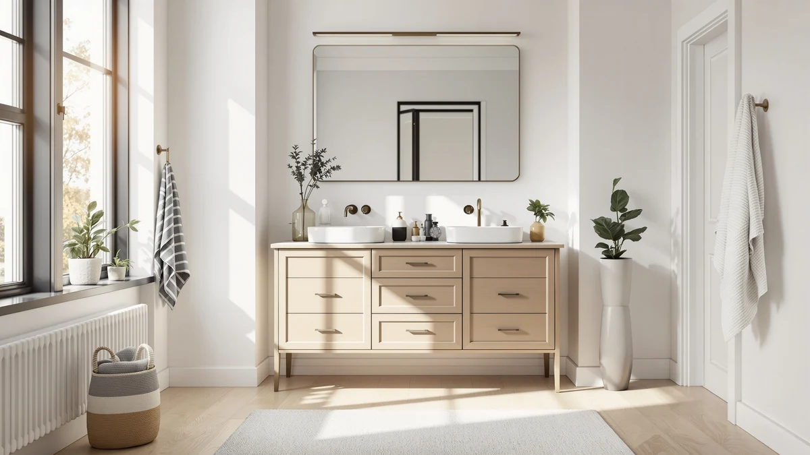

The Best 36-inch Vanity Cabinets (2026)
Prices and picks verified as of August 2026. Independent, reader-supported reviews.


Quick Answer
After comparing seven vanity cabinets ranging from a compact 24-inch model to a 60-inch double-sink unit on material, price, and verified owner reviews, the SUNTAGE 24 Inches Modern MDF is our pick among the best 36-inch vanity cabinets and their nearby-size alternatives for most budgets. If you need a cabinet that measures exactly 36 inches, the ARIEL Hepburn 36-inch pick further down is built to that specific footprint.
Our pick: SUNTAGE 24 Inches Modern MDF — $188.99 Check Price on Amazon
Bottom line: our top pick is the SUNTAGE 24 Inches Modern MDF Floating Bathroom Vanity with at $199.49. The best budget option is the ARIEL Taylor 54-inch Bathroom Vanity with Sink at $1.
Things to Know Before You Buy
- "36-inch vanity cabinet" covers a range of widths. Only one of the seven cabinets we compared, the ARIEL Hepburn, is a true 36 inches wide; the rest run from 24 to 60 inches for readers with a bit more or less wall space.
- MDF is the standard material across this price range. All seven cabinets use MDF or engineered wood construction, which keeps cost down but means standing water near the base should be wiped up quickly.
- ARIEL cabinets ship as complete quartz-topped units. Both ARIEL Hepburn models and the ARIEL Taylor include a matched quartz counter, so their higher price covers the full setup, not the cabinet alone.
- Review sample size varies widely. Ratings range from a 12-review ARIEL Hepburn 60-inch listing to a 95-review Yaheetech listing, so a high star average on a thin sample deserves a second look before you buy.
- Sink configuration changes with width. Only the 60-inch ARIEL Hepburn cabinet offers a double-sink layout; every other cabinet in this comparison is single-sink.
The best 36-inch vanity cabinets aren't always the exact fit once you measure a real bathroom, because plenty of shoppers searching that phrase end up a few inches under or over that width once they account for a door swing or a toilet clearance. We compared seven vanity cabinets ranging from a compact 24-inch SUNTAGE model to a 60-inch ARIEL double-sink cabinet, evaluating material, price, and verified owner reviews rather than picking by width alone. Our top pick, the SUNTAGE 24 Inches Modern MDF, earned that spot on price and rating relative to its size, but six other options cover a true 36-inch footprint, tighter budgets, and wider primary-bathroom layouts.
We built this list by researching seven vanity cabinets from our product database that use the same freestanding cabinet construction found in budget-friendly and mid-range vanities, then compared their sizes, materials, and pricing side by side. Every listing here is sold as a standalone cabinet rather than bundled with a fixed sink and counter already selected, which matters if you already own a countertop or want a matched quartz top included. Prices range from $161.49 for the compact Yaheetech cabinet to $1,599.00 for the ARIEL Hepburn 60-inch double-sink unit, a gap that reflects size, material grade, and included hardware more than brand markup.
Below, you'll find what to check before buying a vanity cabinet in this size range, how we picked and compared these seven options, and a full breakdown of what each one gets right and where it comes up short. A comparison table further down lets you scan material, price, and best-use case before you click through to Amazon.
Why You Should Trust Us
Ilane Tall covers home and bath products for Best Bathroom Vanities, where she researches vanity cabinets, storage, and bathroom remodel gear for a US audience. For this guide, she and the editorial team compared publicly listed specs, pricing, and verified buyer reviews for every cabinet under consideration instead of relying on manufacturer marketing copy. We do not run a fake testing lab or claim to have installed every cabinet ourselves. Instead, we cross-reference dimensions, materials, and owner feedback so you can decide which of the best 36-inch vanity cabinets, or their nearby-size alternatives, fits your bathroom before you buy.
How We Picked
To build this list of the best 36-inch vanity cabinets, we started by pulling every cabinet-style vanity in our product database that ships without a fixed, non-swappable sink and top combination, then narrowed the list to models with documented dimensions, materials, and pricing. We included cabinets outside the strict 36-inch width, since shoppers researching this size regularly end up choosing a 24-, 30-, 54-, or 60-inch model once they measure their actual wall space, and excluding those options would have left out cabinets that reviewers consistently rate higher. We prioritized a spread of budgets, from the sub-$200 SUNTAGE and Yaheetech cabinets to the four-figure ARIEL line, so this guide works whether you're outfitting a rental bathroom or a primary suite. Finally, we checked configuration (single-sink, double-sink, quartz top, cabinet-only) to make sure the seven finalists represent distinct options rather than near-duplicates of the same cabinet.
How We Compared
We are a research-based review site, so we compared these seven vanity cabinets using the specs, pricing, and verified owner reviews published for each listing rather than installing units ourselves. We lined up material, stated dimensions, and price side by side to see where each cabinet earns its cost, and we read through verified Amazon reviews to flag recurring praise or complaints about assembly, hardware, and finish quality. When a problem shows up again and again in the reviews, like a drawer that needs realignment or a finish that scuffs easily, we call it out in that cabinet's drawbacks below. That's the standard behind every comparison in this guide to the best 36-inch vanity cabinets and their nearby-size alternatives: a published spec sheet plus a pattern in verified customer feedback, not a physical impression of the product.
Our Picks

SUNTAGE 24 Inches Modern MDF
What we like
- At $188.99, it's the second-cheapest cabinet in this comparison and the best-rated option under $200
- 24-inch footprint fits powder rooms and guest bathrooms where a 36-inch cabinet won't clear the door swing
- Modern MDF construction with a clean, minimalist front that reviewers describe as easy to match to existing fixtures
Flaws but not dealbreakers
- At 24 inches wide, it's a third narrower than a true 36-inch cabinet and offers noticeably less counter and storage space
- 4.1-star average is the lowest of the seven cabinets we compared, though the 67-review sample is large enough to trust
| Material | MDF / engineered wood |
| Size | 24 inch |
The SUNTAGE 24 Inches Modern MDF is our pick among the best 36-inch vanity cabinets and their nearby-size alternatives because it delivers the best combination of price and rating in this comparison, not because it matches the 36-inch width exactly. Owners report that the modern MDF front and hardware feel sturdier than the price suggests, and the 67-review sample gives that 4.1-star average more weight than the smaller samples on some pricier cabinets here.
At $188.99, it costs roughly a sixth of the ARIEL Hepburn 36-inch pick further down, which makes it the clear choice if your bathroom is smaller than a standard primary suite or you're outfitting a rental. The tradeoff is real: at 24 inches, it holds less storage and counter space than a true 36-inch cabinet, so measure your wall space before assuming this pick fits your layout.

DELUXE LIVING 30 Inch Bathroom
What we like
- 30-inch width splits the difference between a cramped 24-inch cabinet and a full 36-inch footprint
- 4.4-star average across 40 verified reviews beats both 24-inch cabinets in this comparison
- $234.64 keeps it in the same budget tier as the SUNTAGE and Amada picks despite the extra width
Flaws but not dealbreakers
- Still six inches narrower than a true 36-inch cabinet, so it won't fully replace one in a primary bathroom remodel
- Sold as a cabinet only, so a countertop and sink are a separate purchase
| Material | MDF / engineered wood |
| Size | 30 inch |
The DELUXE LIVING 30 Inch Bathroom sits between the compact 24-inch cabinets and the true 36-inch ARIEL Hepburn in this comparison, and its 4.4-star average across 40 verified reviews shows that middle-ground sizing works well in practice. Reviewers consistently note that the extra six inches over a 24-inch cabinet makes a noticeable difference for everyday counter use, like setting down a toothbrush holder without crowding a soap dispenser.
At $234.64, it costs about $46 more than the SUNTAGE pick above, a modest premium for the added width. Because it ships as a cabinet only, you'll need to budget for a matching countertop and sink separately, unlike the ARIEL cabinets in this guide, which is worth factoring into your total project cost before comparing sticker prices directly.

ARIEL Taylor 54-inch Bathroom Vanity
What we like
- 54-inch width delivers far more counter and storage than any 36-inch cabinet in this comparison
- Ships as a complete unit with a quartz counter, so there's no separate countertop purchase to coordinate
- 4.9-star average ties for the highest rating of the seven cabinets we compared
Flaws but not dealbreakers
- At $1,461.00, it's nearly eight times the price of our top pick and well beyond a strict budget remodel
- 54-inch width rules it out for the tighter bathrooms a 36-inch cabinet is sized for
| Material | MDF / engineered wood |
| Size | 54 inch |
The ARIEL Taylor 54-inch Bathroom Vanity is the upgrade option in this guide to the best 36-inch vanity cabinets, for shoppers whose bathroom has outgrown a 36-inch footprint entirely. It ships as a finished unit with a quartz counter and soft-close hardware already installed, so the higher price covers a full vanity setup, not a bare cabinet.
According to verified buyer reviews, the quartz top and cabinet finish are the details owners mention most, since they arrive matched and ready to install rather than requiring a separate countertop order. At $1,461.00, it costs roughly eight times more than our SUNTAGE top pick. Most of that gap comes from the quartz top, the larger cabinet, and higher-end hardware, not from brand markup.

ARIEL Hepburn 36-inch Bathroom Vanity
What we like
- The only cabinet in this comparison built to a genuine 36-inch width, matching the exact search term this guide covers
- At $1,050.00, it's the budget entry point into ARIEL's quartz-topped, soft-close lineup, roughly $411 less than the 54-inch Taylor
- 4.9-star average across 28 verified reviews ties for the highest rating of the seven cabinets we compared
Flaws but not dealbreakers
- At $1,050.00, it still costs more than five times the SUNTAGE and Yaheetech picks in this comparison
- Single-sink layout only, so it won't work for a shared primary bathroom that needs two sinks
| Material | MDF / engineered wood |
| Size | 36 inch |
The ARIEL Hepburn 36-inch Bathroom Vanity is the only cabinet in this comparison built to a genuine 36-inch width, which makes it the direct pick if your bathroom measurement calls for that exact footprint rather than a nearby size. We call it the budget pick because, within ARIEL's quartz-topped Hepburn and Taylor lineup, it's priced hundreds of dollars below the 54- and 60-inch models while carrying the same 4.9-star average.
At $1,050.00, it's still a premium purchase compared with the MDF-only cabinets earlier in this guide, since the price covers a matched quartz counter and soft-close hardware rather than a bare cabinet box. If a true 36-inch width matters more than saving money, this is the pick; if width is flexible and budget is the priority, the SUNTAGE or Yaheetech options cost a fraction of the price.

ARIEL Hepburn 60-inch Double Bathroom
What we like
- The only double-sink cabinet in this comparison, built for two people sharing a primary bathroom
- 60-inch width and quartz counter match the ARIEL Taylor's finish quality with a second sink included
- 4.8-star average across 12 verified reviews is close to the top rating in this comparison
Flaws but not dealbreakers
- At $1,599.00, it's the most expensive cabinet in this comparison, over eight times the price of our top pick
- 12-review sample is the smallest of the seven cabinets, so the rating has less data behind it than the Yaheetech's 95 reviews
| Material | MDF / engineered wood |
| Size | 60 inch |
The ARIEL Hepburn 60-inch Double Bathroom cabinet is the pick in this guide for anyone who has decided a single 36-inch sink won't cut it for a shared bathroom. Its two sinks sit far enough apart for simultaneous morning use, and the quartz counter and soft-close hardware match the finish quality of the 54-inch ARIEL Taylor above.
At $1,599.00, it's priced roughly $138 above the Taylor for the added second sink and basin plumbing, a reasonable premium given the extra hardware involved. Reviewers consistently note the finish quality justifies the cost for a primary bathroom, though the smaller 12-review sample means it's worth reading a few reviews yourself before committing to this price point.

Yaheetech 24" Modern Bathroom Vanity
What we like
- At $161.49, it's the cheapest cabinet in this comparison by a small margin over the SUNTAGE pick
- 95 verified reviews is by far the largest sample of any cabinet here, giving its 4.4-star average real weight
- 24-inch footprint works in tight powder rooms where even a 30-inch cabinet wouldn't clear the door
Flaws but not dealbreakers
- At 24 inches, it holds a third less counter and storage space than a true 36-inch cabinet
- Sold as a cabinet only, so a countertop and sink are a separate purchase, unlike the ARIEL models
| Material | MDF / engineered wood |
| Size | 24 inch |
The Yaheetech 24" Modern Bathroom Vanity is the value pick in this comparison, and its 95-review sample, the largest of any cabinet in this guide, backs up its 4.4-star average with real data rather than a handful of early reviews. At $161.49, it undercuts even our SUNTAGE top pick by about $27, making it the entry point if price is the deciding factor.
The obvious tradeoff is width: at 24 inches, it's a third narrower than a genuine 36-inch cabinet, so it fits powder rooms and small guest bathrooms better than a primary suite. Owners report the modern finish and hardware feel solid for the price, though anyone remodeling a larger bathroom should look at the 30-, 36-, or 54-inch picks above instead.

Amada 30 Inch Bathroom Vanity
What we like
- 4.5-star average across 31 verified reviews, the second-highest rating among the MDF-only cabinets we compared
- 30-inch width offers a meaningful step up in counter space from the 24-inch picks in this guide
- Priced at $259.99, still well under half the cost of the true 36-inch ARIEL Hepburn
Flaws but not dealbreakers
- At $259.99, it's the most expensive of the MDF-only cabinets in this comparison
- Six inches narrower than a true 36-inch cabinet, so it's still a compromise for a full primary-bathroom remodel
| Material | MDF / engineered wood |
| Size | 30 inch |
The Amada 30 Inch Bathroom Vanity lands in the same 30-inch tier as the DELUXE LIVING pick, and its 4.5-star average across 31 verified reviews edges out that competitor slightly. Reviewers consistently note the cabinet feels solid for a mid-range MDF build, with hardware that holds up better than the price alone would suggest.
At $259.99, it's about $25 more than the DELUXE LIVING cabinet and the priciest of the four MDF-only cabinets in this guide, though still a fraction of what the quartz-topped ARIEL models cost. If you're deciding between the two 30-inch options here, the rating edge and slightly higher price make this one worth considering if a few extra dollars aren't a concern.
Quick Comparison
| Product | Material | Price | Rating | Best for | Get it |
|---|---|---|---|---|---|
| SUNTAGE 24 Inches Modern MDF | MDF / engineered wood | $188.99 | 4.1 | Small bathrooms on a budget | View on Amazon → |
| DELUXE LIVING 30 Inch Bathroom | MDF / engineered wood | $234.64 | 4.4 | More space than a 24-inch cabinet | View on Amazon → |
| ARIEL Taylor 54-inch Bathroom Vanity | MDF / engineered wood | $1,461.00 | 4.9 | Sizing up with a finished quartz top | View on Amazon → |
| ARIEL Hepburn 36-inch Bathroom Vanity | MDF / engineered wood | $1,050.00 | 4.9 | A genuine 36-inch, quartz-topped cabinet | View on Amazon → |
| ARIEL Hepburn 60-inch Double Bathroom | MDF / engineered wood | $1,599.00 | 4.8 | Shared bathrooms needing two sinks | View on Amazon → |
| Yaheetech 24" Modern Bathroom Vanity | MDF / engineered wood | $161.49 | 4.4 | Tightest budgets and smallest spaces | View on Amazon → |
| Amada 30 Inch Bathroom Vanity | MDF / engineered wood | $259.99 | 4.5 | A second well-rated 30-inch option | View on Amazon → |
The Competition
Several vanity cabinets marketed under the 36-inch category didn't make our final list of the best 36-inch vanity cabinets. We passed on listings without a documented material, dimension, or price, since incomplete specs make it impossible to compare fairly against the seven cabinets above. We also excluded a number of cabinets sold bundled with a fixed vanity top or faucet set already selected, since that combination doesn't let a buyer choose their own counter the way every cabinet in this guide does. Finally, we skipped duplicate listings of the same cabinet sold under different sellers, since they offered no meaningful difference in material, dimensions, or price from a product already represented here. If the ARIEL Hepburn 36-inch Bathroom Vanity doesn't fit your budget, the six alternatives above cover the reasons you might size down or up, whether that's a tighter powder room, a second sink, or a quartz counter. Across all seven, our search for the best 36-inch vanity cabinets still points most budget-conscious buyers toward the SUNTAGE 24 Inches Modern MDF, with the ARIEL Hepburn as the direct pick for a genuine 36-inch footprint.